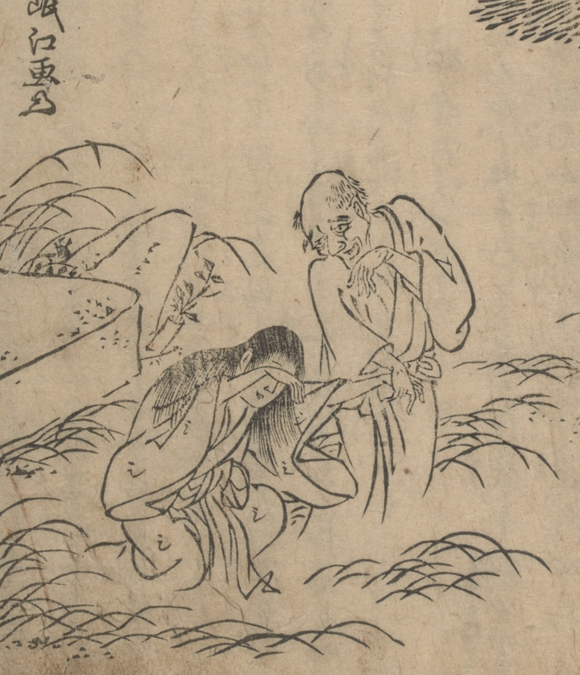

幽霊；ユウレイ，男；オトコ，女；オンナ

墓原に現れた男女の幽霊。両人とも足がない。和尚に救いを求めている場面。
著作者：禿箒子著，橘岷江画／出典：親書誌：U426_nichibunken_0469：怪談國土産；カイダンクニミヤゲ／日付：2025／資源識別子：U426_nichibunken_0469_0001_0000
Copyright (c)2010- International Research Center for Japanese Studies, Kyoto, Japan. All rights reserved.